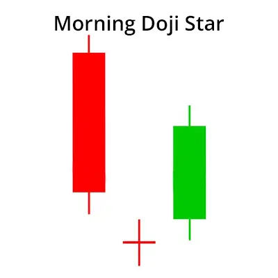
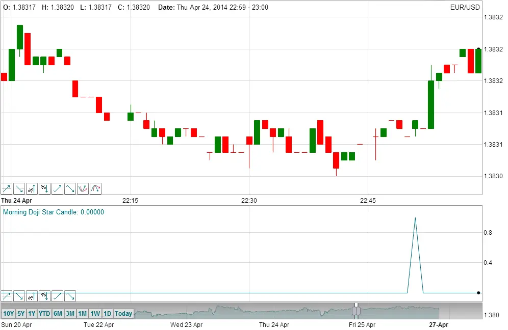

A Morning Doji Star consists of a long bearish candle, followed by a Doji that has gapped below it, then a third bearish candle that closes well within the body of the first candle and in doing so confirming the reversal. It is considered a strong bullish price reversal candlestick pattern.


| An overview of Candlesticks |
A candle represents the changes in price over an interval of time such as 1 day or 1 minute. The main body of the candle illustrates the opening price at the start of the time interval and the price when the market closed at the end of the interval. The head and tail represent the highest and lowest prices during the interval.
The length of the 'Head' is the difference between the highest price during the interval and the greater of the Open or Close price. The length of the 'Tail' is the difference between the lowest price and the difference between lesser of the Open or Close price. The length of the 'Body' if the difference between the Open and Close price. The full length of the candle is referred to as the 'Shadow'.
If the price closed at a price above the opening price, then the candle is referred to as a 'bullish' candle and if the price closed below the opening price, then the candle is referred to as a 'bearish' candle. On the TimeToTrade charts the bullish candles are coloured green and the bearish candles are coloured red as illustrated: